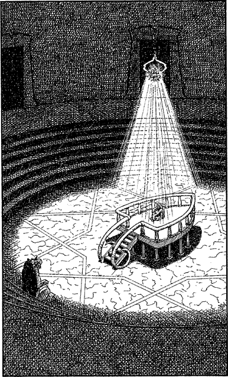

300
You increase your speed as you approach the iron door and get ready to push against it, expecting great resistance but, to your complete surprise, the heavy portal swings open the instant you reach out to touch it. A gust of cooling air wafts in your face, encouraging you to step into the hall which lies beyond. Swiftly the iron door slams shut behind you but you pay it no heed. The refreshing coolness and the awesome spectacle of the hall itself commands your complete attention.
Tiers of glittering gold-veined marble descend to a circular hall where a ring of fluted copper pillars support a platform, shaped like the foredeck of some great ship. Multicoloured rays stream from a crystal sphere suspended above this platform, creating a cage of flickering light at its centre. Sitting in this radiant cage is a pale-skinned man with long blond hair. His knees are drawn up to his chin and his eyes are closed, as if asleep. You recognize him to be Banedon, but still mindful of your encounter with the Helghast, you reserve your judgement.
A narrow staircase, its hand-rails carved and fashioned from the tusks of Kalte mammoths, leads directly to the platform. Cautiously you descend the tiers, cross the floor, and advance towards these stairs, stopping only when you reach a granite throne positioned directly opposite the staircase. The back and arms of this crude seat have been chiselled to resemble a lion-like creature sitting on its haunches, and it is from here that you attempt to communicate telepathically with the sleeping man.

At first there is no response. Then, wearily, he raises his head and forces open his eyes. His face is haggard and lined with fatigue, but the look of extreme tiredness slowly changes to a smile of recognition when he sees you.
Lone Wolf … the words form slowly in your mind, thank Ishir you’ve found me …
Convinced now that he truly is your friend Banedon, you rush towards the steps, eager to free him from his prison. Then you sense something is wrong and you skid to a halt at the foot of the steps. Banedon’s weary smile has changed to a wide-eyed look of fear.